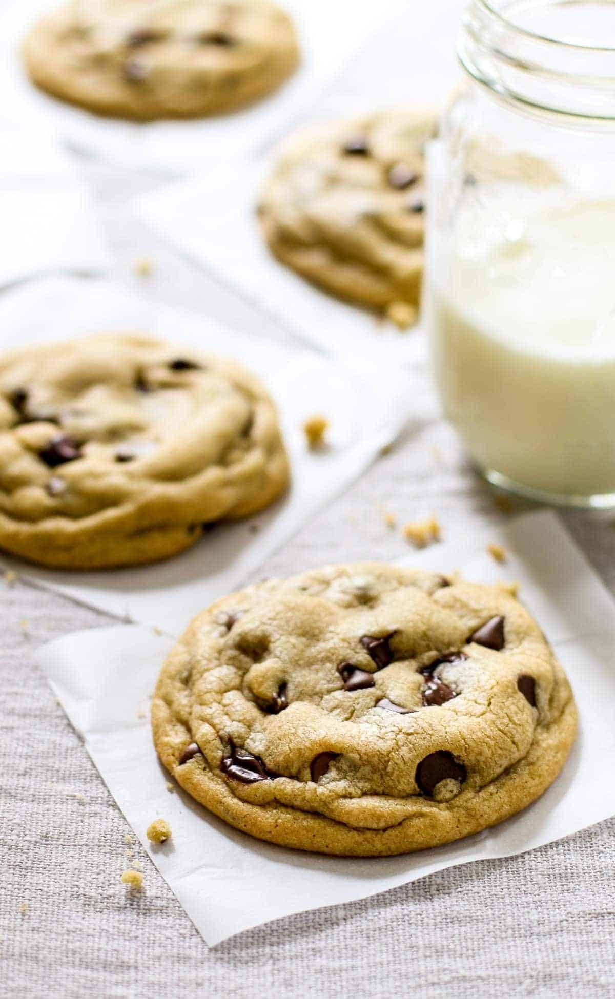

Chocolate Chip Cookies

Lets cook those cookies!
-
1 cup salted butter softened
-
1 cup granulated sugar
-
1 cup light brown sugar packed
-
2 teaspoons pure vanilla extract
-
2 large eggs
-
3 cups all-purpose flour
-
1 teaspoon baking soda
-
½ teaspoon baking powder
-
1 teaspoon sea salt
-
2 cups chocolate chips (12 oz)
Directions
-
Preheat oven to 375 degrees F. Line three baking sheets with
parchment paper and set aside.
-
In a medium bowl mix flour, baking soda, baking powder and salt. Set aside.
-
Cream together butter and sugars until combined.
-
Beat in eggs and vanilla until light (about 1 minute).
-
Mix in the dry ingredients until combined.
-
Add chocolate chips and mix well.
-
Roll 2-3 Tablespoons (depending on how large you like your cookies)
of dough at a time into balls and place them evenly spaced on your prepared
cookie sheets.
-
Bake in preheated oven for approximately 8-10 minutes. Take them out when they
are just barely starting to turn brown.
-
Let them sit on the baking pan for 5 minutes before removing to cooling rack.